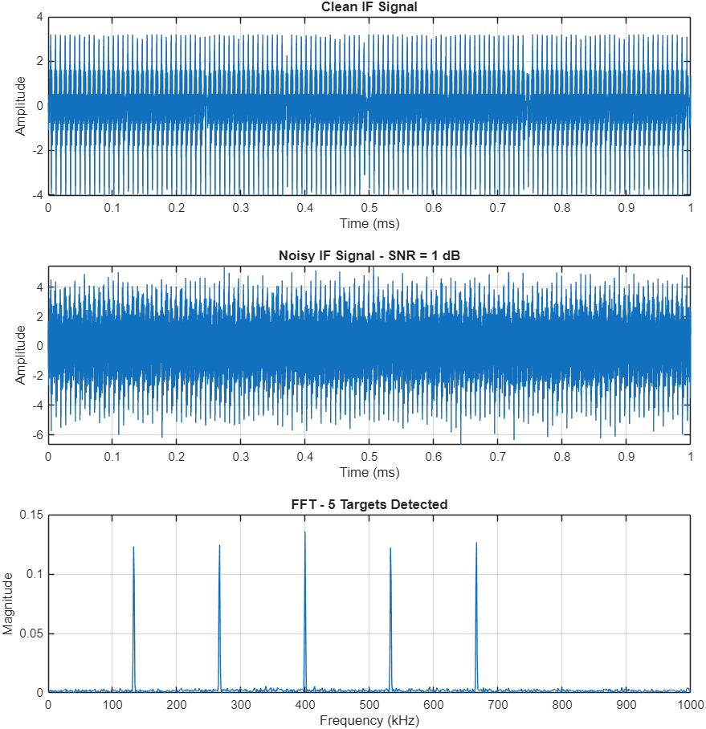

Personal project · MATLAB
FMCW Radar Simulator
A frequency-modulated continuous-wave radar simulation built up over four versions: from finding one target's range, to several targets in noise, to a range-Doppler map for moving targets.
Signal processingFFTfindpeaksVelocity estimate in progress
How it works
The radar sends a chirp whose frequency rises linearly: 200 MHz of bandwidth over 1 ms. The echo from a target comes back delayed. Mixing the sent and received signals gives a "beat" frequency that is proportional to the target's distance, so an FFT of the mixed signal turns into a range measurement: d = c·fb / (2k), where k is the chirp slope.
Results
Output from running the scripts in MATLAB. The noise is random, so exact numbers shift slightly from run to run.
| Version | True range (m) | Estimated (m) | Error |
|---|---|---|---|
| v1 | 100 | 99.75 | 0.25% |
| v2 (1 dB SNR) | 100 / 200 / 300 / 400 / 500 | 99.75 / 200.25 / 300.00 / 399.75 / 500.25 | ≤ 0.25% |
| v4 (20 dB SNR) | 100 / 200 | 99.75 / 200.25 | ≤ 0.25% |
Every range error is within one range bin. With 200 MHz of bandwidth the resolution is c/(2B) = 0.75 m.
Versions
v1Single target range
One target at 100 m. A Hamming window is applied before the FFT, and the strongest peak gives the beat frequency.
v2Multiple targets with noise
Five targets from 100 to 500 m, with heavy noise added (1 dB SNR). findpeaks picks out the five strongest peaks, and the script reports percent error for each.

v3Adding velocity: didn't work
My first attempt at sending many chirps to measure speed. Variables were used before they were defined and the mixing step ended up inside the wrong loop, so the script didn't run. I kept it as a record and rebuilt the logic in v4.
v4Range-Doppler map
256 chirps at a 77 GHz carrier, the typical automotive radar band, with two targets moving at 10 and 20 m/s. A second FFT across chirps builds a range-Doppler map. Range detection works, and both targets show up at 100 m and 200 m on the map.

In progress: the velocity estimate isn't correct yet. Both targets come out near 0.19 m/s instead of 10 and 20 m/s. That's the next thing I'm fixing.
Code
The latest version is below. Earlier versions are fmcw_1.m to fmcw_3.m.
fmcw_4.m (MATLAB)
% fmcw_4
% Frequency Modulated Continuous Wave Radar
% Multi-Target FMCW Range and Velocity Estimator
% Michael Kenyon
%% Goals
res = 1 ; % Resolution (meters)
max_rng = 37500 ; % Maximum Range (meters)
%% Defining Physical Parameters
c = 3.00e+08 ; % Speed of Light (meters/second)
B = 200e+06 ; % Bandwidth (Hertz)
T = 1e-03 ; % Chirp Time (seconds)
k = B/T ; % Chirp Slope (Hertz/second)
f0 = 1.0e+06 ; % Initial Frequency (Hertz)
fc = 77e+09 ; % Carrier Frequency (77 GHz)
n_chirp = 256 ; % Number of Chirps
PRI = 20e-06 ; % 20 microseconds
%% Create a Time Vector
fs = 1e+08 ;
dt = 1/fs ;
t = 0:dt:T-dt ; % Fixed: no off-by-one
N = length(t) ; % Defined here so it's available everywhere
%% Transmitted Chirp
phi = 2.*pi.*(f0.*t + 0.5.*k.*t.^2) ;
s = cos(phi) ;
%% Targets
targets = [100, 200] ; % Starting distances (meters)
velocities = [10, 20] ; % Velocities (m/s)
%% Noise Parameters
snr_db = 20 ;
snr_linear = 10^(snr_db/10) ;
%% Chirp Loop
range_doppler = zeros(n_chirp, floor(N/2)+1) ;
for chirp = 1:n_chirp
r = zeros(size(t)) ;
for i = 1:length(targets)
d_current = targets(i) + velocities(i)*(chirp-1)*PRI ;
td_i = 2*d_current/c ;
t_delay_i = t - td_i ;
r = r + cos(2*pi*fc*(2*d_current/c) + ...
2*pi*(f0*t_delay_i + 0.5*k*t_delay_i.^2)) ;
end
x = s .* r ; % Mix
x_noisy = x + (1/snr_linear)*randn(size(x)) ; % Add noise
W = hamming(N)' ; % Window
X = fft(x_noisy .* W) ; % FFT
range_doppler(chirp, :) = abs(X(1:floor(N/2)+1))/N ; % Store
end
%% Frequency and Range Axes
f = (0:floor(N/2)) * (fs/N) ;
range_axis = (0:floor(N/2)) * (c/(2*B)) ;
%% Range Profile
range_profile = mean(range_doppler, 1) ;
%% Extract Distances
n_targets = length(targets) ;
[~, idx] = findpeaks(range_profile, 'SortStr', 'descend', 'NPeaks', n_targets) ;
idx = sort(idx) ;
fb_all = f(idx) ;
d_all = c*fb_all/(2*k)
Percent_Error = abs(d_all - targets)./targets*100
%% Doppler FFT
doppler_fft = fft(range_doppler, n_chirp, 1) ;
doppler_fft = fftshift(doppler_fft, 1) ;
RD_map = abs(doppler_fft) ;
v_axis = linspace(-1/(2*PRI), 1/(2*PRI), n_chirp) * (c/(2*fc)) ;
%% Extract Velocity From Range-Doppler Map
RD_col = zeros(n_chirp, n_targets) ;
for i = 1:n_targets
RD_col(:,i) = RD_map(:, idx(i)) ; % Extract column at each target range bin
end
[~, v_idx] = max(RD_col) ; % Find peak row for each target
v_all = v_axis(v_idx) % Convert index directly to velocity
V_Percent_Error = abs(v_all - velocities)./abs(velocities)*100
%% Plots
x_last = x ; x_noisy_last = x_noisy ; % Save last chirp for plotting
figure;
subplot(4,1,1)
plot(t*1e3, x_last)
xlabel('Time (ms)') ; ylabel('Amplitude')
title('Clean IF Signal') ; grid on
subplot(4,1,2)
plot(t*1e3, x_noisy_last)
xlabel('Time (ms)') ; ylabel('Amplitude')
title(sprintf('Noisy IF Signal - SNR = %d dB', snr_db)) ; grid on
subplot(4,1,3)
plot(f./1e3, range_profile)
xlim([0, f(max(idx))/1e3 * 1.5])
xlabel('Frequency (kHz)') ; ylabel('Magnitude')
title(sprintf('FFT - %d Targets Detected', n_targets)) ; grid on
subplot(4,1,4)
imagesc(range_axis, v_axis, 20*log10(RD_map./max(RD_map(:))))
xlim([0 500])
xlabel('Range (m)') ; ylabel('Velocity (m/s)')
title('Range-Doppler Map') ; colorbar